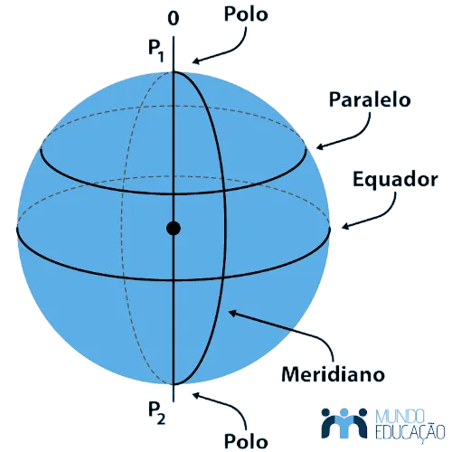

É um corte feito na esfera por um plano na esfera ,
➜ E a relação dele é a2 = r2+ b2
Volume
➜ V = 4/3* πr3
Área da Superficie Esferica - A "Casca" da Esfera
➜ A = 4πr2
Fuso Esférico
➜ Afuso = πr2α / 90
Cunha Esférica
➜ Afuso = πr3α / 270
Volume da Esfera:
Área da Superfície Esférica:
Área do Fuso Esférico:
Área da Cunha Esférica: